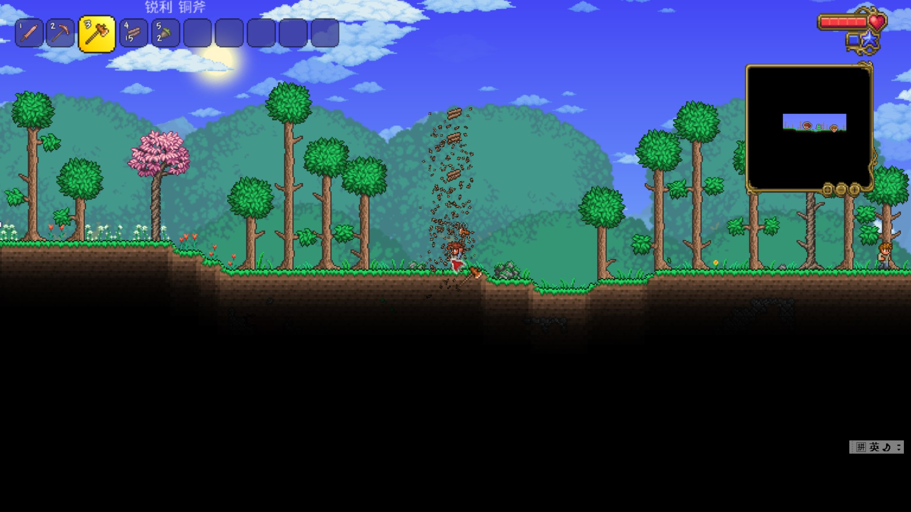

泰拉瑞亚新手开荒攻略
版本：pc1.4.2 模式：经典 难度：软核
1.要致富，先撸树
走到树旁，左键点击左上角物品栏中的斧头，把光标移到树旁，按一下CTRL键，再按住左键，便可自动砍树，砍树后会得到木材。

首先先用木材制作工作台，工作台是重要的工具制作平台，按ESC键可以进入背包，背包下面是制作区，你可以在制作区制作道具
你可以在工作台旁制作一套木套装，这样你就有了一定的防御力。
2.建造房屋让npc入住
在造房屋前你需要准备好椅子，桌子，门，这些都可以用木头在工作台上制作
东西准备好后，放置木头或其它方块可以建造房屋，标准房屋的长和宽至少为4*8或者5*7，装上门和椅子还有桌子再挂上火把，一间房屋就完成了
向导会第一个入住你的房屋，当你不清楚自己获得的材料可以用来做什么时，向导就派上用场了。
值得一提的是，1.4版本比1.3版本增加了npc的幸福感，npc幸福感越高，，他卖给你的东西就越便宜，同时你卖给他东西时收益就越高。
3.冒险
当你在地面时，你会看到蹦跳的史莱姆，你可以点击物品栏中的剑，然后狂点鼠标左键，将其击杀。
在泰拉瑞亚中，困难模式前一共有四种地形（地表），分别是丛林、沙漠、血腥之地或腐化之地（一张地图只能有其中一种）、冰原，每种地形都会刷出特有的怪物，新手建议挖矿做好衣服后再去探索这些地形，同时地图的最左或最右会有一个地牢，
地图的最底层则是地狱。
你可以使用物品栏中的镐子来破坏方块,在你的住所不远处，一直朝下挖，你会发现一些闪着光的方块，这些就是矿石，有一些矿矿以你现在镐子的力量是无法挖掘的，你可以用新的材料做出更强的稿子，注意，当你进入地底冒险时，可能会有怪物刷新，他们会比地面上的怪物强很多，应尽量避免与他们的战斗。
更多泰拉瑞亚攻略前往泰拉瑞亚官方wiki